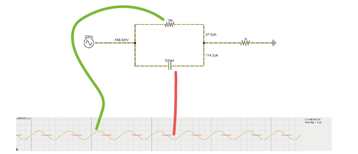
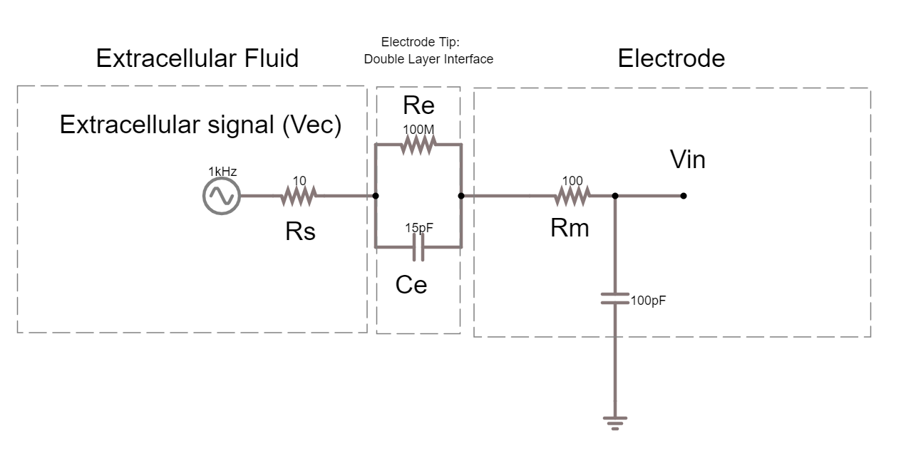
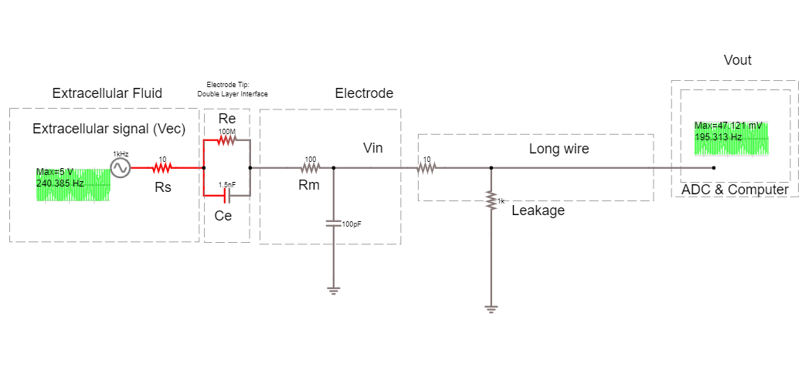
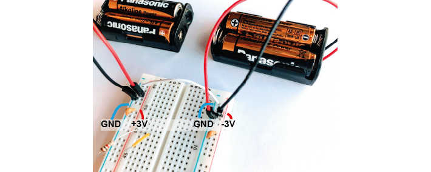
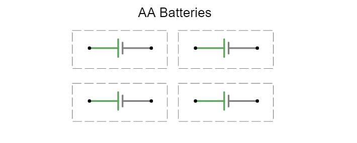
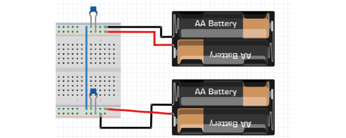

Latihan Hari 2: Tanpa Perangkat Keras#
1. Kapasitor dan Resistor Secara Paralel#
Pada rangkaian di bawah ini, Anda akan melihat sebuah kapasitor dan sebuah resistor yang dipasang secara paralel. Sumber tegangan berganti-ganti pada frekuensi 20 Hz, berubah dari -10 hingga +10 volt. Arus mengalir melalui resistor atau melalui kapasitor menuju ground.

Latihan
1A. Tingkatkan nilai resistor menjadi 200 kOhm. Apa yang terjadi pada arus yang melalui resistor?
1B. Kembalikan resistor ke 10 kOhm. Sekarang, tingkatkan kapasitansi kapasitor menjadi sekitar 10 mF. Apa yang terjadi pada arus?
1C. Kembalikan nilai ke 10 kOhm dan 100 nF.
Ubah frekuensi sinyal bolak-balik menjadi:
1000 Hz (potensial aksi!)
kemudian menjadi 1 Hz
Anda mungkin perlu mengubah kecepatan simulasi menggunakan slider merah di kanan atas, dan menyesuaikan skala-x pada osiloskop di bawah (klik kanan / properties / dan geser ‘horizontal scale’).
Bagaimana hubungan antara frekuensi sinyal dengan besarnya arus yang melewati kapasitor atau resistor?
2. Rangkaian Ekuivalen Elektroda#
Dalam handout teori, kita membahas bagaimana sebuah elektroda dapat direpresentasikan sebagai rangkaian yang berisi sebuah resistor dan sebuah kapasitor. Sekarang kita akan membangun rangkaian ekuivalen ini di dalam simulator.
Latihan
2A. Di dalam simulator, ubah rangkaian yang digunakan di atas untuk membangun rangkaian ekuivalen dari elektroda tungsten terpolarisasi. Lihat handout teori untuk detail lebih lanjut.
Berikut beberapa nilai yang dapat digunakan:
Rm: resistansi DC dari kawat elektroda logam, 10–100 Ohm.
Ce: kapasitansi ujung elektroda, yang dihasilkan oleh lapisan ganda di sekitar elektroda. Ce ~ 0.2 pF / µm2, sehingga sekitar 10–20 pF (jika elektroda tidak dilapisi).
Re: resistansi ujung elektroda, dipasang paralel dengan Ce. ~ 100 MOhm.
Ubah catu tegangan bolak-balik agar menghasilkan 1 V pada 1 kHz, meniru sinyal yang berasal dari sel. Nilai 1 V lebih besar dari sinyal ephys sebenarnya, tetapi memudahkan untuk melihat aliran arus. Ubah slider kecepatan simulasi dan kecepatan arus hingga Anda dapat melihat ke mana arus mengalir.
2B. Apa yang terjadi jika Anda menghapus resistor Re?
2C. Latihan bonus: Bisakah Anda mengubah rangkaian ini dari elektroda tungsten yang mempolarisasi menjadi rangkaian yang merepresentasikan elektroda non-polarizable?
3. Impedansi Shunt#
Berikut adalah rangkaian elektroda dengan impedansi shunt sebesar 100 pF yang ditambahkan:

Latihan
3A. Apa yang dimaksud dengan impedansi shunt di sini?
3B. Berapa persentase sinyal yang hilang antara Vec dan Vin? Mengapa?
3C. Apa yang dapat kita ubah untuk meningkatkan sinyal pada Vin?
3D. Ujung dari beberapa elektroda tertentu, misalnya tetrode nichrome, dapat dilapisi secara elektroplating dengan lapisan tipis emas. Proses ‘goldplating’ ini meningkatkan luas permukaan ujung elektroda, sehingga menyediakan lebih banyak ruang untuk pemisahan muatan. Hal ini meningkatkan kapasitansi ujung elektroda sekitar 100 kali lipat. Lakukan perubahan ini pada simulator rangkaian. Seberapa mirip Vec dan Vin sekarang?
Rangkaian Perekaman#
Untuk benar-benar melakukan perekaman, kita harus menghubungkan elektroda ke sistem akuisisi lainnya. Sistem perekaman memiliki analog to digital converter (ADC) dan sebuah komputer perekam. Resistansi kebocoran di sini adalah tempat sistem perekaman terhubung ke ground.

Latihan
3E. Berapa besar tegangan pada elektroda, Vec, yang kita rekam pada Vout?
3F. Tambahkan sebuah headstage ke rangkaian ini dengan menempatkan penguat operasional ideal di antara elektroda dan kabel panjang. Apa yang terjadi pada Vout? Mengapa?
3G. Ubah rangkaian untuk mencegah penguat mengalami saturasi. Berapa penguatan (gain) penguat sekarang?
4. Penguat Operasional#
Rel Tegangan#
Di dalam simulator, penguat operasional ‘ideal’ ditampilkan tanpa catu daya. Namun dalam dunia nyata, kita perlu memberikan daya pada op-amp. Kita akan menggunakan baterai untuk membuat rel tegangan (‘rails’). Kita akan membuat rel -3 V dan +3 V menggunakan baterai AA simulasi yang masing-masing menyediakan 1.5 V.
Untuk melakukan ini, kita menggunakan trik umum dengan mengubah dua catu daya biasa menjadi catu daya bipolar.

Latihan
4D. Menggunakan 4 buah sumber tegangan DC 1.5 V yang disimulasikan sebagai baterai, hubungkan semuanya sehingga Anda memiliki catu daya +3 V, 0 V, dan -3 V.

4E. Ganti op-amp ‘ideal’ dengan op-amp ‘nyata’ di dalam simulator. Gunakan catu daya bipolar untuk menyalakannya. Nilai amplitudo apa yang Anda dapatkan pada keluaran sekarang? Apa perbedaannya dibandingkan dengan op-amp ideal?
Kapasitor Bypass#
Kapasitor bypass adalah kapasitor kecil yang bertindak seperti baterai sekunder kecil. Baterai yang kita gunakan memiliki ESR yang tinggi – ‘equivalent series resistance’, dan juga memiliki kapasitansi. Ini berarti baterai tersebut kurang baik dalam menyediakan arus dengan cepat. Akibatnya, ketika op-amp mulai bekerja, ia bisa kehabisan arus untuk waktu yang sangat singkat hingga baterai mampu mengembalikan rel tegangan ke nilai semula. Hal ini buruk bagi kualitas sinyal.
Oleh karena itu, kita membiarkan kapasitor kecil ini terisi. Jika baterai tidak dapat menyediakan arus sesaat, kapasitor bypass akan mengosongkan muatannya dan menyediakan arus cadangan dengan cepat. Kita memanfaatkan fakta bahwa kapasitor ini memiliki ESR yang sangat rendah dan dapat menyediakan arus hampir secara instan. Fakta bahwa kapasitor ini terlalu kecil untuk memberi daya lebih dari satu milidetik tidak menjadi masalah, karena pada saat itu baterai sudah kembali menyesuaikan diri.
Latihan
4F. Tambahkan kapasitor bypass ke dalam simulasi berdasarkan posisi mereka pada catu daya bipolar yang ditunjukkan pada gambar berikut:
